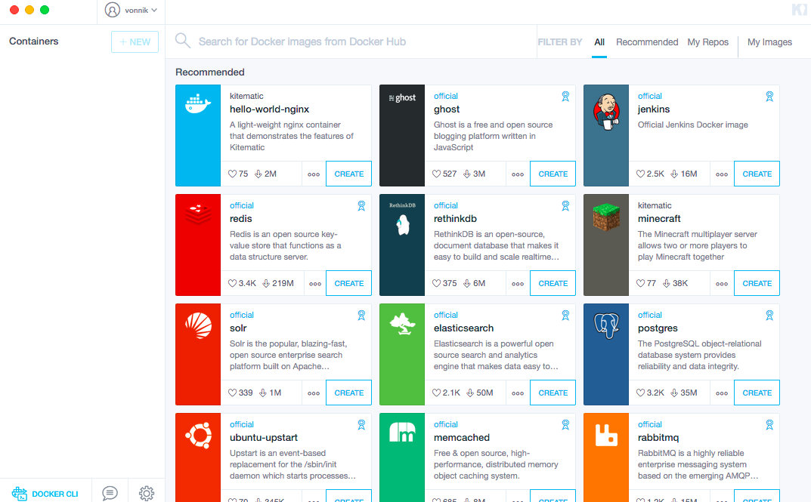
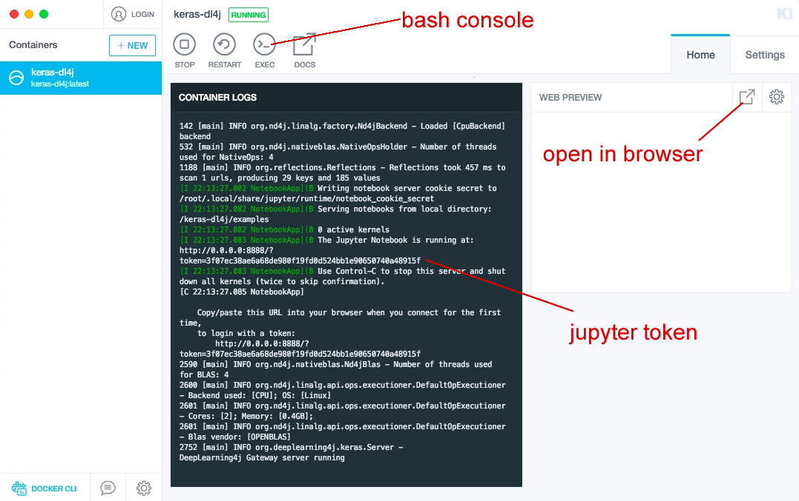
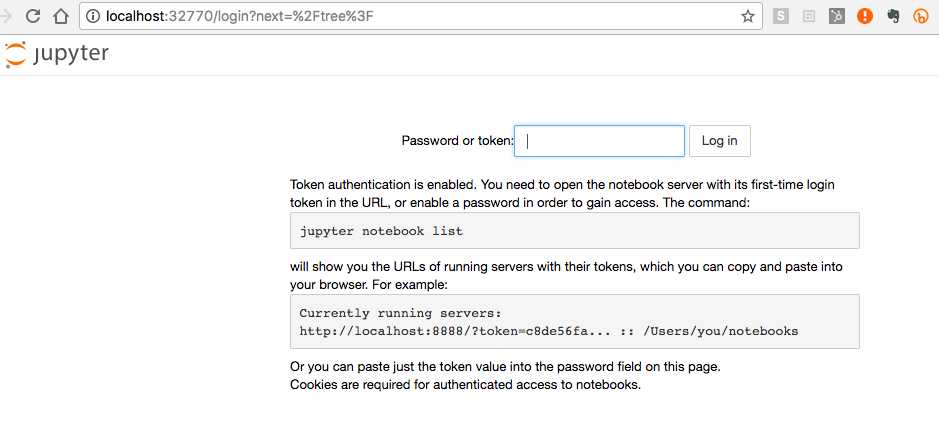
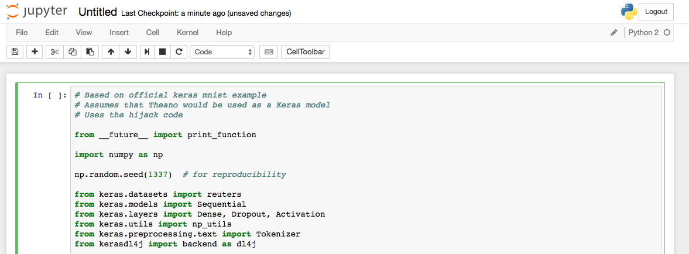
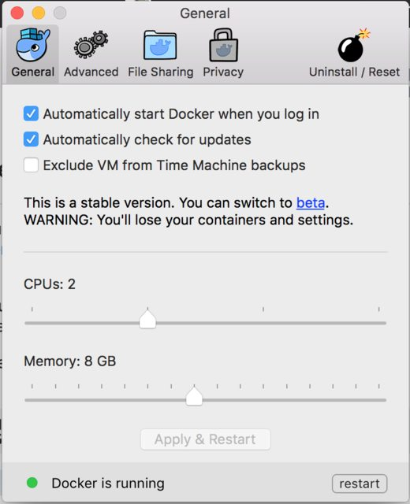

Keras是目前使用最广泛的为Python编写的开源深度学习工具之一。Keras有一套受Torch启发的API，在Theano和TensorFlow的基础上再提供一个抽象层，让此二者更易于使用。Keras允许用户导入来自Theano、TensorFlow、Caffe和Torch等最先进的深度学习框架的模型。而同样的模型可以从Keras导入到Deeplearning4j中。
Deeplearning4j有一项采用Keras的Python API，让开发者能通过Keras导入其他学习框架的模型（见下文）；也就是说，使用Python的团队可以将工作成果导入到JVM中进行大规模推广，而无需浪费精力重写模型。
git clone https://github.com/crockpotveggies/dl4j-examples --branch keras-examples --single-branch
Kitematic的主界面如下图所示：
点击右上方的“My Images”您的镜像之一应当是keras-dl4j。
点击“Create”。
点击右上方的图标，系统将会打开一个浏览器窗口，用localhost访问Jupyter。您将看到要求Jupyter令牌的页面，令牌需要从Kitematic的bash控制台中复制粘贴。
将令牌复制输入后，应会看到如下画面。

点击右上方的“New”并选择在笔记本下选择Python 2，这会在新标签页中打开一个新的笔记本。
点击文件列表底端的路透社MLP示例。复制Keras代码并将其粘贴至新建的Python 2笔记本中。在该笔记本中，点击工具栏上有一个向右箭头的“Run Cell”按钮。
然后系统会开始显示结果和日志，如下图所示。

结果可能会显示为“loading Theano”，而我们实际上是在“劫持”Keras方法，让它们通过Py4J在JVM上运行。
神经网络进行本地定型时，您有可能会用尽内存。如果发生这样的情况，请进入计算机界面的菜单栏，点击Docker的鲸鱼图标，然后选择Preferences/Advanced。您可以在此增加分配给Docker的内存。如果有足够的内存，我们建议分配8GB。
如果调整了分配给Docker的内存量，就需要点击右下方的按钮来重启Docker。
本教程的代码可以在Github上找到。用Theano或TensorFlow等其他后端定型模型的团队可以将其模型导入JVM而不损失任何工作成果。
这一点很重要，因为不同的学习框架擅长解决不同的问题，而深度学习工作流的各个阶段也都由不同的编程语言所主导。Python虽然主导了数据探索和原型开发阶段，却并不一定最适合生产部署。Deeplearning4j与Hadoop、Spark、Kafka、ElasticSearch、Hive和Pig等大数据技术栈中常见的开源库高度集成。
Deeplearning4j也获得了两种Hadoop生态系统发行版——Cloudera CDH和Hortonworks HDP的认证。导入Keras模型的功能让Deeplearning4j可以帮助深度学习用户将自己的神经网络模型转移到大型企业生产栈中运行。
目前我们还不能支持Keras和其他深度学习框架支持的所有网络架构，但我们正在不断增加可以从Keras导入到DL4J的网络类型。
Scala提供与Python相似的接口，对Scala感兴趣的Python程序员不妨了解一下Deeplearning4j的Scala API——ScalNet。
更多关于从Keras导入模型的信息请参阅模型导入指南。